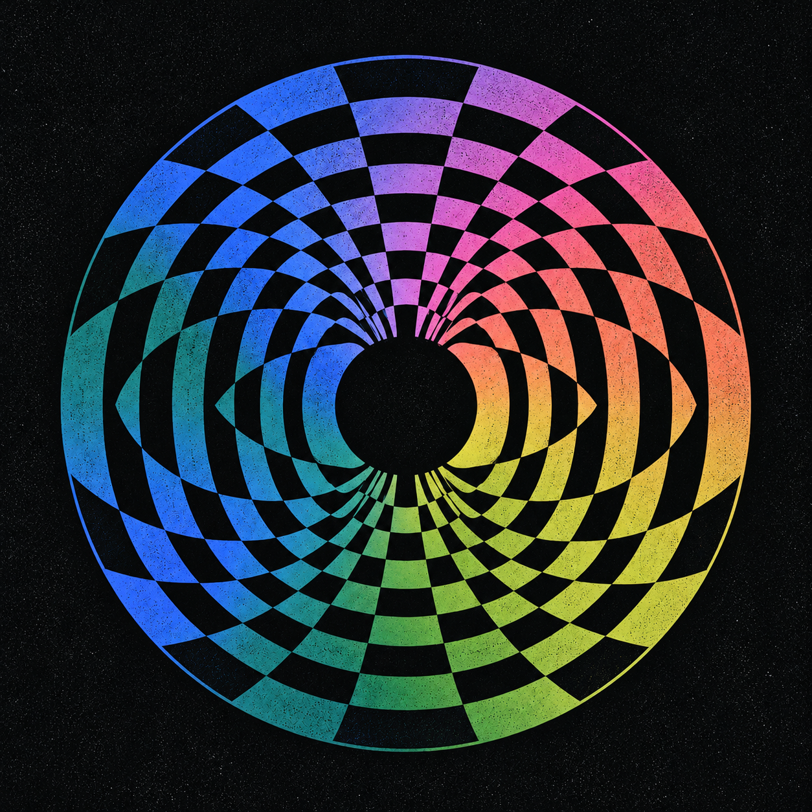
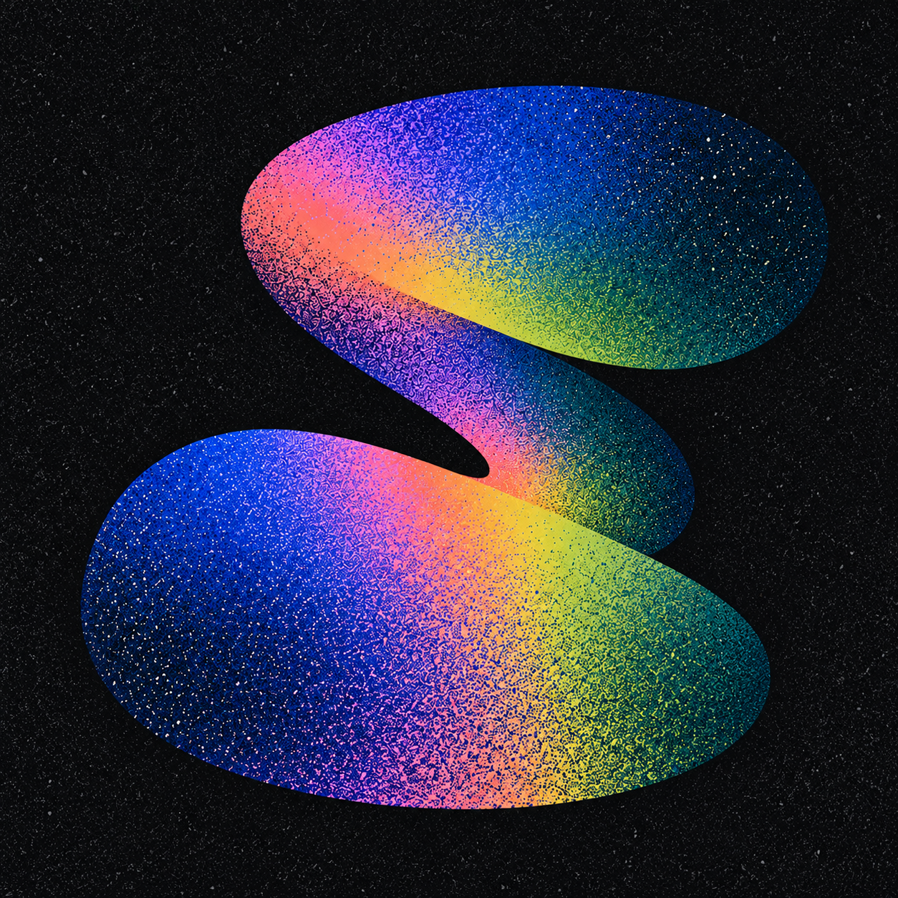

AETHER / OPTICAL STUDIES / 02
同一张 CD，三种声音。
2026.10.24黑底 · 虹彩 · 白灰颗粒
从沉浸页的圆盘出发：原版、颗粒与旋律折光。三张保持同样的盘径、留白与配色，直接比较光与噪声的分量。
SMALL SCALE / 48 · 96 · CIRCLE
与上一轮放在一起
查看上一轮 ↗

正在绘制 CD…
AETHER / OPTICAL STUDIES / 02
从沉浸页的圆盘出发：原版、颗粒与旋律折光。三张保持同样的盘径、留白与配色，直接比较光与噪声的分量。
SMALL SCALE / 48 · 96 · CIRCLE


正在绘制 CD…